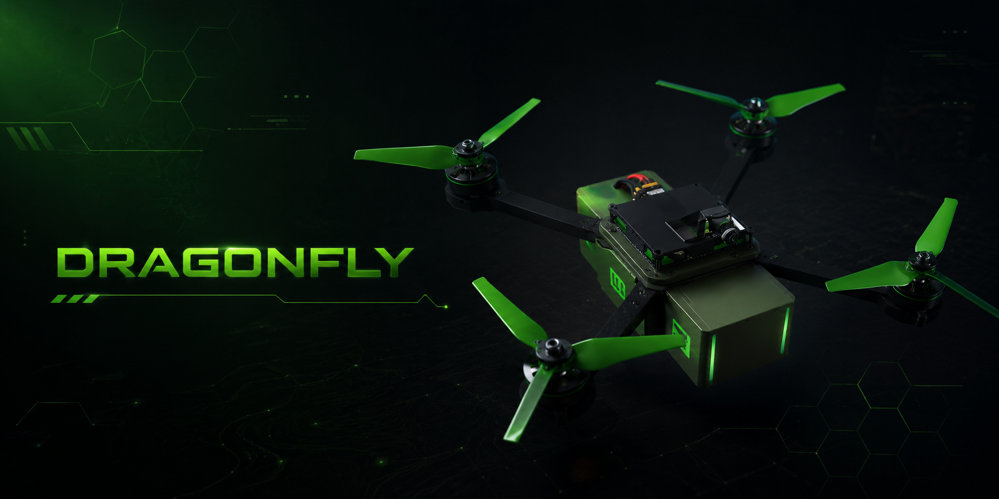
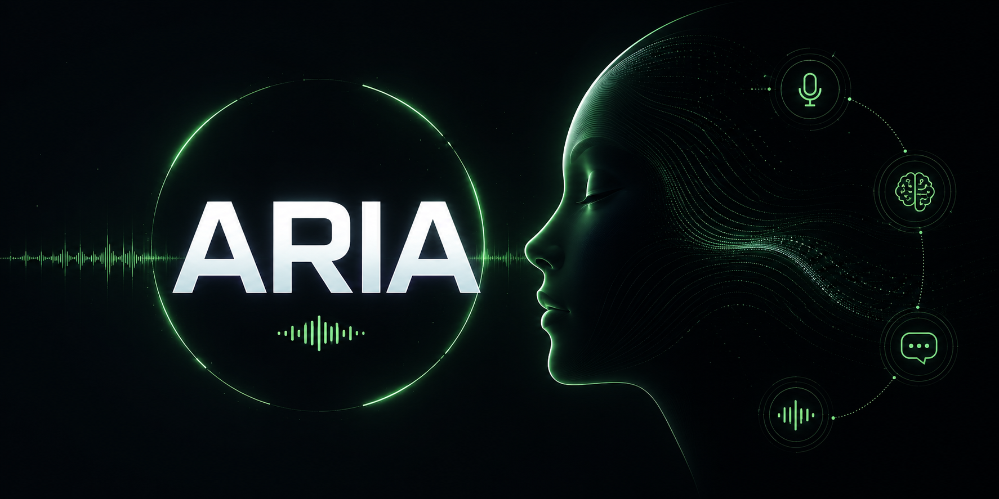
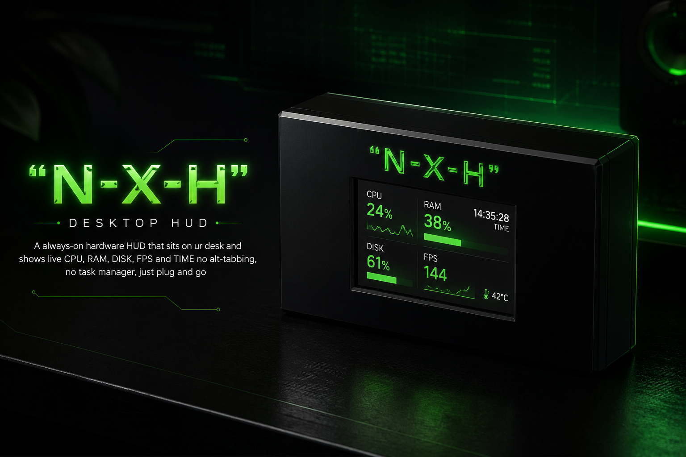

Flipper Black
ESP32-S3 based multi-tool with NFC, SubGHz, LoRa, GPS and custom PCB.more then flipper zero
I'm Broccoli 🥦, a 18yo Builder from Pakistan. studing ICS and speanding most of the time building things that i like: Hardware, Custom PCB, and everything I like. I'm connected to Hack Club and document everything on GitHub.Long game: MIT , startup exits, and using that credibility to drive real change.
My Tech Stack
Skills
ESP32-S3 based multi-tool with NFC, SubGHz, LoRa, GPS and custom PCB.more then flipper zero

A custom all-in-one flight controller + ESC, built entirely from discrete ICs rather than premade modules, designed for me by me. Flight control and all 4 motor drivers live on a single 4-layer PCB, designed from scratch in KiCad.

A personal desktop assistant that executes voice and text commands to control and modify my system.

A fully wireless 75% mechanical keyboard built from scratch custom PCB, per-key RGB, BLE 5.0, hot-swap switches, and a 3D printed case. Every component chosen, every trace routed by hand.

A always-on hardware HUD that sits on ur desk and shows live CPU, RAM, DISK, FPS and TIME no alt-tabbing, no task manager, just plug and go

An autonomous AI agent built with LangChain and OpenAI capable of reasoning, tool use, and multi-step task execution. Deployed on Render.
contacts